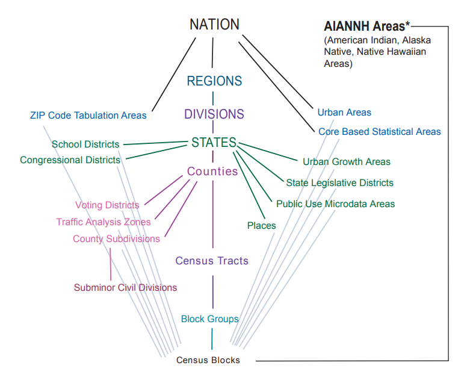
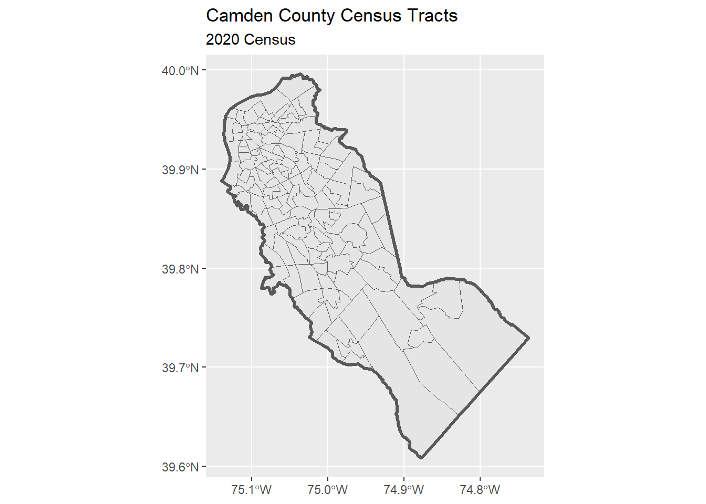
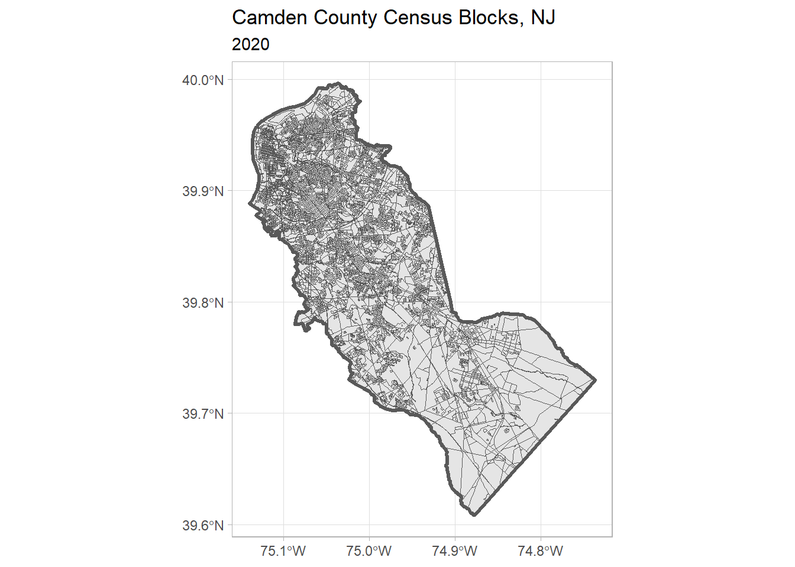
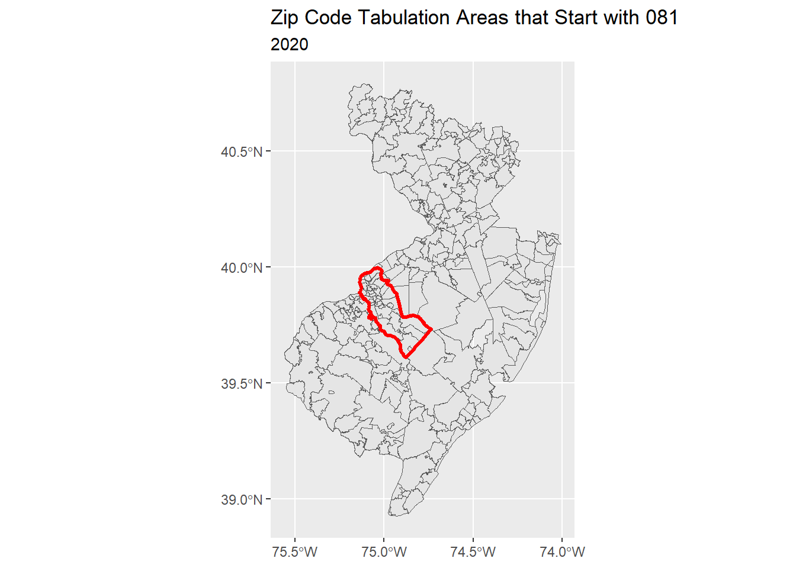
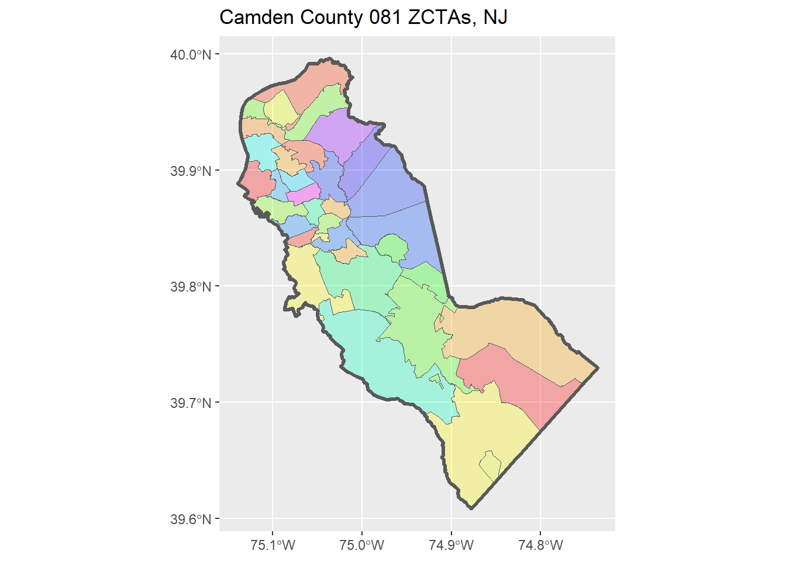
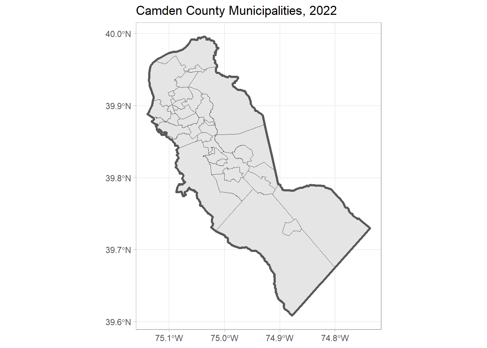
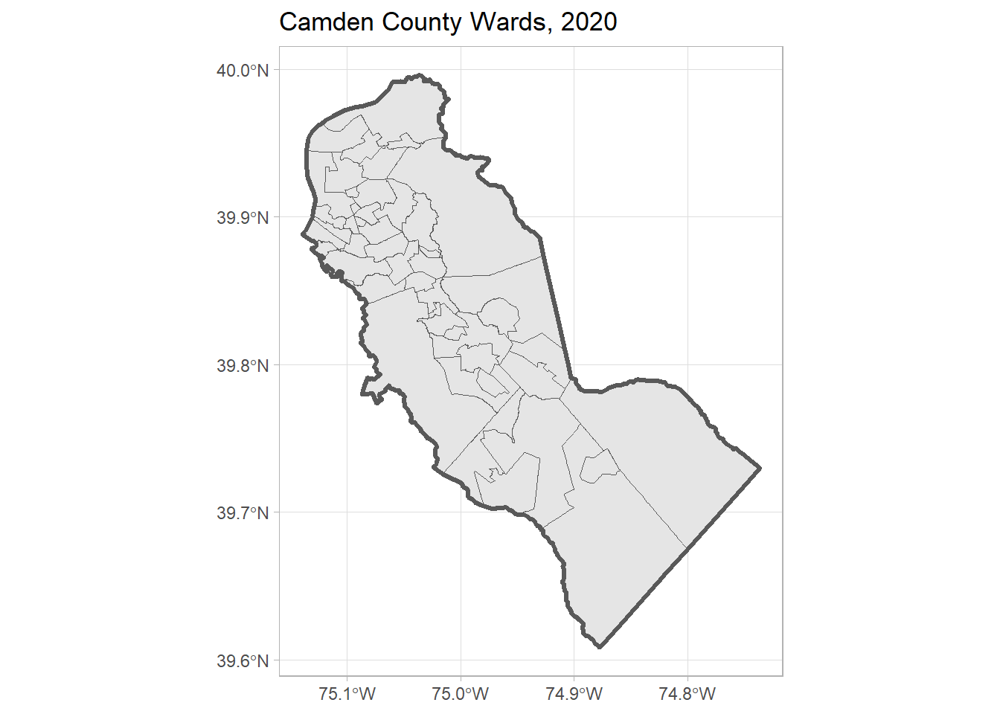

Exercise 1. Import Census and Municipal Geometries
Population Profiling with R, August 2024
1 Summary
In this exercise, we will import and map the following datasets for Camden County, NJ:
- county boundary
- census tracts (2020)
- census blocks (2020)
- zip code tabulation areas (ZCTAs) (2020)
- municipalities
- wards
As we import them, we will:
- make sure they are in the same CRS (specifically geographic coordinates NAD83, EPSG:4269)
- save copies to disk so we can use them in other notebooks
This notebook will feature functions from the following packages:
tigrissfdplyrarcgislayersggplot
2 Spatial Data from the US Census Bureau
The US Census Bureau is a good choice for spatial data for the following reasons:
- they are an official government source
- they provide boundaries for a wide range of spatial units researchers like to work with, from States all the way down to Census Blocks (see diagram below)
- they also publish other kinds of spatial units, including things like zip codes, school districts and congressional districts (complete list)
- you can import boundaries via an API (i.e., don’t have to go to a website and download zip files)
- they come with a standard identifier (i.e.,
geoid) that the Census Bureau and many other data publishers use when publishing socio demographic data - they provide historical data for statistical areas that change over time (e.g., census enumeration units)
- the tigris and tidyCensus packages make downloading them easy

2.1 Setup
First we load the packages we’ll be needing:
The main package we’ll be using to download spatial data from the US Census is tigris. You do not need an API key to download spatial data from the Census.
To enable caching of data, set `options(tigris_use_cache = TRUE)`
in your R script or .Rprofile.tigris supports caching for the files it downloads, which we certainly want to enable:
options(tigris_use_cache = TRUE)2.2 Set Up a Local Data Directory
We also want to save the spatial files we download to our hard drive, so we can use them in other notebooks.
We’ll do this by creating a folder in your operating system’s ‘AppData’ folder, and copies of our “finished products” there.
my_data_dir <- tools::R_user_dir("datafordemocracy", which = "data")
if (!dir.exists(my_data_dir)) dir.create(my_data_dir, recursive = TRUE)
tools::file_path_as_absolute(my_data_dir)[1] "C:/Users/Andy/AppData/Roaming/R/data/R/datafordemocracy"2.3 Import the County Boundary
The tigris package doesn’t have a function to download a single county boundary. So we start by getting all the counties in NJ:
nj_counties_sf <- tigris::counties(state = "NJ", cb = TRUE, progress_bar = FALSE)Retrieving data for the year 2022nj_counties_sf |> head()-
GEOIDis the unique identifier for each county. It is a combination ofSTATEFP(State ID) andCOUNTYFP(county number within the state).
- the CRS is geographic coordinates in NAD83 (EPSG:4269)
-
cb = TRUEtell it to return a ‘cartographic boundary’ file (i.e., with water bodies removed)
Pull out just Camden county:
camden_bnd_sf <- nj_counties_sf |> filter(NAME == "Camden")Plot it:
Save a copy to disk:
2.4 CHALLENGE
Import and plot the county boundary where you live or work.
## Your answer here2.5 Import Census Tracts
Census tracts are designed to have about ~4,000 people. They are not the smallest unit, but they are important enumeration units because many of the census variables are only available at the tract level and larger.
camden_tracts20_sf <- tigris::tracts(state = "NJ", county = "Camden", year = 2020,
cb = TRUE, progress_bar = FALSE)
nrow(camden_tracts20_sf)[1] 129head(camden_tracts20_sf)Note: The GEOID values are 10-digits wide (combination of state, county, and tract ID values).
Map the census tracts
Next, we plot the census tracks and the county boundary together.
ggplot(camden_tracts20_sf) +
geom_sf() +
geom_sf(data = camden_bnd_sf, fill = NA, lwd = 1.2) +
labs(title = "Camden County Census Tracts",
subtitle = "2020 Census")
Save a copy:
2.6 Import Census Blocks
Using a similar approach as above:
camden_blks20_sf <- tigris::blocks(state = "NJ", county = "Camden", year = 2020, progress_bar = FALSE)
nrow(camden_blks20_sf)[1] 8770Plot:
ggplot(camden_blks20_sf) +
geom_sf() +
geom_sf(data = camden_bnd_sf, fill = NA, lwd = 1.2) +
labs(title = "Camden County Census Blocks, NJ",
subtitle = "2020") +
theme_light()
Save a copy:
2.7 CHALLENGE
Import and plot the block groups for YOUR county.
## Your answer here2.8 Import Zip Codes
Zip codes are not ideal for spatial analysis, but sometimes that’s all the location reference we have.
We can import Zip Code Tabulation Areas (zctas), which are roughly the boundaries of zip codes (details).
ztacs don’t have the name of a county as an attribute, so we have to take a different approach to select the ones we want to keep.
Import zcta’s that start with 08 (southern half of New Jersey):
## Uncomment the following to download the ZCTAs from the census API
## zcta_08_sf <- tigris::zctas(year = 2020, starts_with = "08", progress_bar = FALSE)
## Load a saved copy
zcta_08_sf <- readRDS(here::here("exercises/data/zcta_08_sf.Rds"))
nrow(zcta_08_sf)[1] 290head(zcta_08_sf)Plot them:
ggplot(zcta_08_sf) +
geom_sf() +
geom_sf(data = camden_bnd_sf, fill = NA, col = "red", lwd = 1.1) +
labs(title = "Zip Code Tabulation Areas that Start with 081",
subtitle = "2020")
To select the zctas we want to keep, we have to do a spatial query:
camden_zcta20_sf <- zcta_08_sf |>
st_intersection(camden_bnd_sf)Warning: attribute variables are assumed to be spatially constant throughout
all geometriesnrow(camden_zcta20_sf)[1] 47Plot the Camden ZCTAs:
## Define a color pallete
rand_cols <- nrow(camden_zcta20_sf) |>
rainbow(end=5/6) |>
sample(size = nrow(camden_zcta20_sf), replace = TRUE)
ggplot(camden_zcta20_sf) +
geom_sf(fill = rand_cols, alpha = 0.3) +
geom_sf(data = camden_bnd_sf, fill = NA, lwd = 1.2) +
labs(title = "Camden County 081 ZCTAs, NJ")
Save a local copy:
3 Import Data from ArcGIS
Many state and local government agencies share GIS data using ArcGIS resources. Quite often, they use a product called ArcGIS Hub to make base layers available with the public thru an open data portal. Examples:
You can also discover state and local data open sources, including non-ESRI platforms, at: https://www.opendatanetwork.com/.
We will use the arcgislayers package to bring these layers into R. Because these layers have been made publicly available, we do not need an ArcGIS account to download them.
3.1 Setup
The easiest way to install arcgislayers and a couple of other packages that are needed behind the scenes is to install the arcgis ‘meta package’.
# install.packages("arcgis")
library(arcgislayers)3.2 Import Municipality Boundaries
The Camden County Department of Public Works publishes municipalities boundaries on their Open Data Hub. You can see the description page here:
https://camdencountynj-ccdpw.opendata.arcgis.com/datasets/9bea5658edfa490c9d00f98fd9efb6d6_0/
To import it into R, we need to find the FeatureServer URL:
- on the description page above, click ‘View Full Details’
- scroll down > ‘Open in ArcGIS Online’
- Take note of the sublayer(s) in this Feature Layer
- scroll down > copy URL
https://services3.arcgis.com/JGF6qCAQFbROcocK/arcgis/rest/services/CamdenCountyMunicipalLayer/FeatureServer
Now we’re ready to import it:
camden_munip22_url <- "https://services3.arcgis.com/JGF6qCAQFbROcocK/arcgis/rest/services/CamdenCountyMunicipalLayer/FeatureServer"
## Step 1. Open the URL to get the FeatureServer connection
camden_munip22_ftsrv <- arcgislayers::arc_open(camden_munip22_url)
camden_munip22_ftsrv<FeatureServer <1 layer, 0 tables>>
CRS: 26918
Capabilities: Query,Sync
0: CamdenCounty_Municipal2022 (esriGeometryPolygon)Next, we select the (sub)layer we want (in this case there is only one).
The indices of Feature Layers available from a Feature Server start at 0.
camden_munip22_ftlyr <- arcgislayers::get_layer(camden_munip22_ftsrv, 0)
camden_munip22_ftlyr<FeatureLayer>
Name: CamdenCounty_Municipal2022
Geometry Type: esriGeometryPolygon
CRS: 26918
Capabilities: Query,SyncNext, we import our chosen Feature Layer into R with arc_select():
camden_munip22_prj_sf <- arcgislayers::arc_select(camden_munip22_ftlyr) Registered S3 method overwritten by 'jsonify':
method from
print.json jsonlitecamden_munip22_prj_sfarc_select() returns a sf object, but it is in a different CRS than the layers from the US Census.
camden_munip22_prj_sf |> sf::st_crs()Coordinate Reference System:
User input: EPSG:26918
wkt:
PROJCRS["NAD83 / UTM zone 18N",
BASEGEOGCRS["NAD83",
DATUM["North American Datum 1983",
ELLIPSOID["GRS 1980",6378137,298.257222101,
LENGTHUNIT["metre",1]]],
PRIMEM["Greenwich",0,
ANGLEUNIT["degree",0.0174532925199433]],
ID["EPSG",4269]],
CONVERSION["UTM zone 18N",
METHOD["Transverse Mercator",
ID["EPSG",9807]],
PARAMETER["Latitude of natural origin",0,
ANGLEUNIT["degree",0.0174532925199433],
ID["EPSG",8801]],
PARAMETER["Longitude of natural origin",-75,
ANGLEUNIT["degree",0.0174532925199433],
ID["EPSG",8802]],
PARAMETER["Scale factor at natural origin",0.9996,
SCALEUNIT["unity",1],
ID["EPSG",8805]],
PARAMETER["False easting",500000,
LENGTHUNIT["metre",1],
ID["EPSG",8806]],
PARAMETER["False northing",0,
LENGTHUNIT["metre",1],
ID["EPSG",8807]]],
CS[Cartesian,2],
AXIS["(E)",east,
ORDER[1],
LENGTHUNIT["metre",1]],
AXIS["(N)",north,
ORDER[2],
LENGTHUNIT["metre",1]],
USAGE[
SCOPE["Engineering survey, topographic mapping."],
AREA["North America - between 78°W and 72°W - onshore and offshore. Canada - Nunavut; Ontario; Quebec. United States (USA) - Connecticut; Delaware; Maryland; Massachusetts; New Hampshire; New Jersey; New York; North Carolina; Pennsylvania; Virginia; Vermont."],
BBOX[28.28,-78,84,-72]],
ID["EPSG",26918]]We can ‘unproject’ it to NAD83 with sf::st_transform():
camden_munip22_sf <- camden_munip22_prj_sf |>
sf::st_transform(4269)Now we’re ready to plot it with the county boundary:
ggplot(camden_munip22_sf) +
geom_sf() +
geom_sf(data = camden_bnd_sf, fill = NA, lwd = 1.2) +
labs(title = "Camden County Municipalities, 2022") +
theme_light()
Save a local copy:
3.3 Import Wards
Using a similar process we can import the Wards for Camden County from the NJ Office of GIS Open Data Hub.
After you find the URL for the Feature Server, we can get the layer:
nj_wards20_url <- "https://services2.arcgis.com/XVOqAjTOJ5P6ngMu/arcgis/rest/services/Ward_Boundaries_for_New_Jersey/FeatureServer"
nj_wards20_ftsrv <- arc_open(nj_wards20_url)
nj_wards20_ftsrv<FeatureServer <1 layer, 0 tables>>
CRS: 3424
Capabilities: Query,Extract
0: Govt_admin_ward (esriGeometryPolygon)nj_wards20_ftlyr <- get_layer(nj_wards20_ftsrv, 0)
nj_wards20_ftlyr<FeatureLayer>
Name: Govt_admin_ward
Geometry Type: esriGeometryPolygon
CRS: 3424
Capabilities: Query,Extractnj_wards20_ftlyr contains the wards for the entire state of NJ, but we only need the Wards for Camden County. We can let the server do the filtering for us by using additional arguments in arc_select().
First we need to construct a query expression we can use for the where argument. Let’s view the fields:
arcgislayers::list_fields(nj_wards20_ftlyr)We see a field called COUNTY that might work:
camden_wards20_prj_sf <- arcgislayers::arc_select(nj_wards20_ftlyr, where = "COUNTY = 'Camden'")
camden_wards20_prj_sfhead(camden_wards20_prj_sf)Aside from the projection, this looks good-to-go.
camden_wards20_sf <- camden_wards20_prj_sf |>
st_transform(4269)Plot:
ggplot(camden_wards20_sf) +
geom_sf() +
geom_sf(data = camden_bnd_sf, fill = NA, lwd = 1.2) +
labs(title = "Camden County Wards, 2020") +
theme_light()
And save:
3.4 CHALLENGE
Import the Camden County Schools, and plot them. (Solution)
## Your answer here4 DONE!
Remember to save your Quarto document. If you’re working on Posit Cloud, you can down a copy from the File Pane > More > Export.